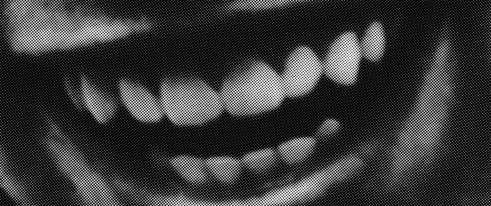

WEB_PAGE

OLIVIA
BENEDETTI
INTRODUZIONE
Questo sito web è stato realizzato interamente in HTML, CSS e JavaScript come esercizio di sperimentazione tra struttura, interazione e movimento.
L’obiettivo non era creare animazioni complesse, ma costruire un linguaggio visivo dinamico partendo da soluzioni basilari, lavorando direttamente sul codice.
Le animazioni presenti nascono dall’uso di transizioni CSS, pseudo-classi come :hover e semplici funzioni JavaScript che reagiscono all’interazione dell’utente, come il movimento del cursore o il passaggio del mouse sugli elementi.
DESCRIPTION
& INTERACTION
Nel primo caso il codice sfrutta il contesto WEBGL per creare un’animazione tridimensionale composta da una griglia di cubi che ruotano e pulsano nello spazio grazie
a funzioni matematiche sinusoidali, con luci e interazione del mouse che permettono di esplorare la scena in modo dinamico. Nel secondo esempio, invece, l’animazione
è bidimensionale e si basa sull’uso del Perlin noise, una funzione che genera variazioni fluide e organiche, per creare onde che si muovono continuamente sullo schermo
e reagiscono ai movimenti del mouse. In entrambi i casi il codice dimostra come algoritmi matematici, input interattivi e rendering grafico possano essere combinati per
produrre visualizzazioni animate, astratte e in costante trasformazione.